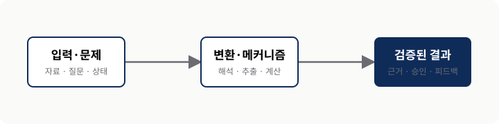
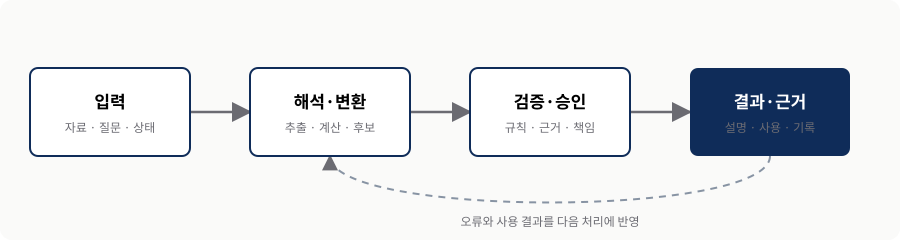
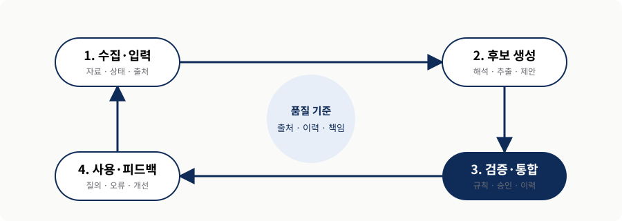

{{DECK_TITLE}}
{{SUBTITLE}}
0. 핵심 요약
이 장이 다루는 문제, 기존 접근의 한계, 저자의 핵심 아이디어와 왜 중요한지를 발표자의 언어로 설명한다. 슬라이드 문장을 늘이지 말고 처음 읽는 사람도 장의 논리를 따라갈 수 있는 독립 문서로 쓴다.
- 문제 — 어떤 기존 방식이 왜 충분하지 않은가?
- 메커니즘 — 핵심 구성요소가 어떤 책임을 주고받는가?
- 판단 — 언제 적용하고 어디에서 통제해야 하는가?
| 단계 | 질문 | 주장 | 실무 판단 |
|---|---|---|---|
| 01 | 핵심 질문 | 저자의 주장 | 적용·비적용 기준 |
| 02 | 다음 질문 | 작동 방식 | 검증할 증거 |
1. 핵심 개념과 작동 방식
- 정의와 경계를 한 문장으로 적는다.
- 구성요소 사이의 관계를 적는다.
- 쉽게 오해하는 지점을 적는다.
1.1 개념 정의
독자가 이 장을 읽는 데 필요한 용어를 먼저 정의한다. 비슷한 개념과 무엇이 다른지, 어떤 책임을 포함하고 무엇은 포함하지 않는지 설명한다.
1.2 구조와 흐름
구성요소를 나열하는 데서 끝내지 말고 입력, 변환, 검증, 결과가 어떻게 이어지는지 설명한다. 아래 도형을 회차의 실제 SVG로 교체하고 캡션에 재구성 범위와 출처를 남긴다.

템플릿 예시. 실제 회차에서는 assets/figs/ 아래의 별도 SVG와 구체적인 alt·출처로 교체한다.핵심 아이디어가 해결하는 문제와 새로 만드는 비용을 같은 섹션에서 다룬다.
2. 무엇이 어떻게 달라지는가
- 기존 방식과 새 접근의 차이를 데이터·책임·검증 관점으로 나눈다.
- 입력에서 결과까지 각 단계의 주체와 실패 경계를 추적한다.
- 자동화 가능한 일과 사람이 승인해야 할 일을 구분한다.
2.1 이전과 이후
새 기술의 이름을 설명하는 것만으로는 작동 방식을 이해하기 어렵다. 기존에는 누가 어떤 입력을 받아 어디에서 판단했고, 새 접근에서는 그 책임이 어느 계층으로 이동하는지 먼저 설명한다. 속도나 편의성뿐 아니라 검증 지점과 새로 생기는 운영 비용도 같은 비중으로 다룬다.
| 관점 | 기존 방식 | 새 접근 | 남는 질문 |
|---|---|---|---|
| 입력 | 정해진 형식과 범위 | 더 다양한 자료와 질문 | 어떤 입력을 신뢰할 것인가? |
| 변환 | 수작업 또는 고정 규칙 | 재사용 가능한 해석·처리 계층 | 오류를 어디에서 탐지할 것인가? |
| 검증 | 사후 확인에 의존 | 근거·규칙·승인을 흐름에 포함 | 최종 책임자는 누구인가? |
2.2 입력–변환–검증–결과
구성요소의 내부 구현을 모두 설명하기보다, 각 단계가 받는 입력과 내보내는 출력, 그리고 다음 단계가 무엇을 검증하는지를 이어서 쓴다. 이 구조는 슬라이드의 메커니즘 도형과 같은 순서를 사용하되 리포트에서는 예외와 한계까지 보존한다.

템플릿 예시. 실제 회차에서는 교재의 논리를 새로 배치한 SVG로 교체하고 자동화·승인 경계를 구체적으로 표시한다.“가능하다”는 설명 뒤에는 반드시 입력 조건, 실패 모드, 확인 방법 중 둘 이상을 붙인다.
3. 역할 분담과 운영 루프
- 구성요소마다 잘하는 책임과 금지할 책임을 명시한다.
- 후보 생성과 검증된 사실을 같은 상태로 취급하지 않는다.
- 피드백, 갱신, 롤백까지 포함해야 반복 가능한 시스템이 된다.
3.1 역할을 먼저 고정한다
한 구성요소가 모든 일을 잘한다고 가정하면 실패를 발견하기 어렵다. 해석과 후보 생성, 사실과 규칙의 보존, 승인과 예외 처리를 각각 누가 맡는지 나누고 구성요소 사이의 계약을 서술한다. 특히 확률적 출력과 검증된 상태를 데이터 모델과 화면에서 구분해야 한다.
| 주체 | 맡길 일 | 맡기지 않을 일 | 통제 장치 |
|---|---|---|---|
| 구성요소 A | 해석, 후보 생성, 요약 | 출처 없는 사실 확정 | 스키마, 근거, 신뢰도 |
| 구성요소 B | 상태, 규칙, 관계 보존 | 모호한 의도 임의 해석 | 제약, 이력, 조회 경로 |
| 운영자 | 품질 기준, 승인, 예외 처리 | 모든 결과의 수동 재작업 | 샘플링, 경보, 롤백 |
3.2 선형 데모를 운영 루프로 바꾼다
데모는 보통 입력에서 답이 나오는 지점에서 끝나지만 운영은 그 뒤부터 시작된다. 사용 중 발견된 오류가 어떤 데이터와 규칙을 수정하고, 변경된 상태가 다음 요청에 어떻게 반영되는지 설명한다. 품질 지표와 책임자는 이 루프의 각 단계에 붙여야 한다.

템플릿 예시. 실제 운영 주체와 검증 상태, 실패 시 되돌아가는 경로를 회차 내용에 맞게 표시한다.4. 근거, 한계와 실패 경계
- 교재의 주장과 발표자의 해석을 구분한다.
- 수치에는 측정 조건과 비교 기준을 함께 기록한다.
- 성공 사례만큼 실패 모드와 중단 기준을 구체화한다.
4.1 주장을 검증 가능한 형태로 바꾼다
“더 정확하다”, “더 빠르다” 같은 문장은 무엇과 비교했는지 없으면 근거가 되지 않는다. 교재가 제공한 근거의 범위와 조건을 기록하고, 최신성이 중요한 외부 사실은 공식 1차 자료로 확인한다. 정량 근거가 없으면 숫자를 만들지 말고 관찰 가능한 품질 기준을 제안한다.
| 핵심 주장 | 근거 유형 | 적용 조건 | 반증·실패 신호 |
|---|---|---|---|
| 핵심 주장 A | 교재 사례 또는 공식 실험 | 데이터·사용자·범위 | 어떤 결과면 주장을 수정할 것인가? |
| 핵심 주장 B | 구조적 논리 또는 비교 | 전제와 제외 범위 | 어떤 예외가 있는가? |
| 발표자 해석 | 위 근거에서 도출한 추론 | 추론임을 명시 | 추가로 확인할 자료는 무엇인가? |
5. 사례를 문제–역할–결과로 해석하기
- 사례의 제품명보다 문제 구조를 먼저 읽는다.
- 기술과 사람의 역할 분담을 분리한다.
- 기대 결과와 함께 실패 경계와 검증 지표를 남긴다.
5.1 대표 사례
교재 사례를 요약하는 데서 끝내지 않고 왜 이 접근이 필요했는지, 각 구성요소가 무엇을 담당했는지, 결과를 어떤 기준으로 확인할지를 다시 쓴다. 사례의 데이터와 사용자가 내 업무와 다르다면 그 차이도 명시한다.
| 사례 | 문제 구조 | 역할 분담 | 결과와 실패 경계 |
|---|---|---|---|
| 사례 A | 데이터·관계·사용자 요구 | 기술 A / 기술 B / 운영자 | 품질 지표와 허용하지 않을 오류 |
| 사례 B | 다른 도메인의 같은 패턴 | 재사용되는 책임과 달라지는 책임 | 전이 가능한 교훈과 한계 |
5.2 내 문제로 옮기는 질문
우리 데이터는 충분히 식별되고 갱신되는가, 결과를 검증할 주체가 있는가, 사용자가 반복적으로 겪는 문제가 이 접근의 강점과 직접 연결되는가를 질문한다. “도입할 수 있는가”보다 “운영하면서 책임질 수 있는가”를 먼저 확인한다.
사례와 우리 환경 사이에서 가장 크게 달라지는 전제 하나를 고르고, 그 차이가 설계를 어떻게 바꾸는지 토론한다.
6. 선택 기준과 다음 행동
- 적합 신호와 비적합 신호를 같은 무게로 비교한다.
- 기술 선택 전에 문제, 품질, 책임을 먼저 정의한다.
- 작게 검증할 실험과 중단 기준을 함께 정한다.
6.1 도입 판단표
| 질문 | 적합 신호 | 비적합 신호 | 검증할 것 |
|---|---|---|---|
| 핵심 강점이 필요한가? | 문제의 병목을 직접 줄임 | 단순 규칙·검색으로 충분 | 대표 사용자 질문과 기준선 |
| 데이터를 통제할 수 있는가? | 출처·갱신·소유자가 명확 | 입력 품질과 권한을 모름 | 샘플 데이터와 오류 유형 |
| 운영 가능한가? | 승인·감시·롤백 절차가 있음 | 생성 결과를 곧바로 사실로 취급 | 책임자, 경보, 중단 조건 |
6.2 작은 검증에서 시작한다
전체 시스템을 한 번에 바꾸기보다 대표 질문과 실패 비용이 분명한 좁은 범위를 고른다. 기존 방식의 기준선을 측정하고, 새 접근이 개선해야 할 품질과 운영 비용을 함께 본다. 성공 기준뿐 아니라 어느 결과에서 실험을 중단하거나 설계를 바꿀지도 합의한다.
핵심 용어
| 용어 | 이 장에서의 의미 |
|---|---|
| 핵심 용어 A | 비슷한 개념과 구분되는 간결한 정의. |
| 핵심 용어 B | 이 장의 맥락에서 사용하는 범위. |
참고 자료와 도형 출처
- [1]교재 챕터의 서지 정보와 사용 범위.
- [2]외부 논문·공식 문서·도형의 직접 출처.